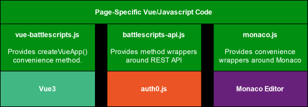
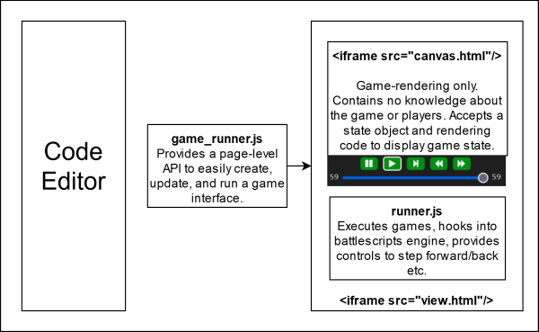
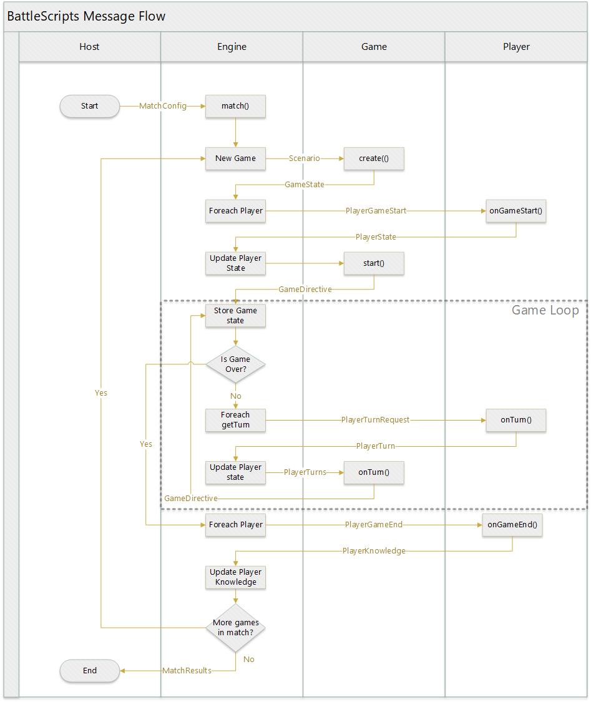

{ How It Works }
Overview
AWS Architecture
This is a high-level view of the AWS architecture. Of course, there are additional details ommitted.
-
Auth0 is used for authentication, which offers GitHub, Google, and custom email/password by default. Once the user logs in, Auth0 returns a signed JWT. This JWT is then used to call a BattleScripts user endpoint. The token is verified to be authentic, then the BattleScripts endpoint tries to retrieve an existing user record based on the Auth0 id, or if one doesn't exist then creates one. It then signs a new JWT containing the user record and returns it.
This exchange of tokens is necessary so BattleScripts can use external authentication and not store user secrets, but also have custom user records with custom attributes.
-
All data is retrieved via the BattleScripts API, passing the BattleScripts token as authentication. Except for a few endpoints, all BattleScripts APIs require a token or the request will be rejected with a 401.
-
API Gateway defines the endpoints that are available via the API. It is a pass-thru to Lambda.
-
All APIs are implemented as separate Lambda functions. Using the Serverless framework, the APIs share common code but can be deployed separately.
-
Data is stored in DynamoDB. A few Global Secondary Indexes are used to allow retrieving all published players by game id, for example.
-
When the Publish Game API is hit, the data is saved to Dynamo and also written to a JSON file on S3. At publish time the published game table is also scanned and a list of games is built and stored as JSON. This is done because the list of games and the games themselves are retrieved often, but rarely written. This saves many calls to Dynamo, which is expensive compared to S3.
Published players are not written to S3. This is because player code must be considered secret and untrusted. No player should be able to load and see another player's code, whereas game code is public and trusted.
-
The javascript battlescripts API layer knows whether to get data from S3 or the API, based on the method being called. The method to get a published game, for example, retrieves it from S3 instead of API.
-
S3 is configured to allow https public read. It also stores game thumbnail images, leaderboard data, etc.
-
A CloudWatch Event is configured to run hourly and trigger a specific Lambda function to run tournaments and update the leaderboards.
-
The tournament Lambda loads all published players for each game and runs a round-robin tournament, tracking which players win against which players, totaling points, and arriving at the results.
-
All the results that power the leaderboard pages are written as static JSON files to S3.
Front-End Architecture
Although built on top of standard Vue3, Auth0, and Monaco libraries, convenience methods and abstractions are added by custom libraries to make development easier and more consistent.
Each individual page has custom code that implements the features required specifically for it.
Game Runner
Running a game on-the-fly while a user is developing their code looks seamless, but actually requires a lot of coding and coordination.
This diagram needs more work and more detail. There is a lot to cover here!
Here are the high-level bullet points about how the game runner works in the player editor:
- The Player Editor page includes game_runner.js, which provides an API for creating updating, and executing games in the runner UI. The API creates the iframes, loads content, manages the async communication, etc. The page itself just calls methods and trusts that the rest will take care of itself.
- The view.html iframe actually contains the battlescripts engine module. It is passed the game definition (code and rendering info) from the containing page via the API.
- The game code and player code run in WebWorkers. This allows for timing out of players, in case an infinite loop is accidentally created and would otherwise lock up the browser.
- A "wrapper" player is built around the actual player code, to run it in the WebWorker, and to provide the asynchronous communication needed to interact with the game engine. This is all transparent.
- The "canvas" renders the game, but knows nothing about the game.
- The canvas is in a separate iframe so that any styles or code contained in the game's rendering definition does not cause any conflicts. In the future, the canvas html may be supplied from the server with proper CSP to guarantee that nothing external can be loaded.
- As the code in view.html runs the game via code in runner.js, it hooks into the battlescripts engine via the API hooks. That allows it to monitor the game and capture the JSON being passed back and forth.
- The turn requests, game state, and other details are saved in memory to allow for playing, pausing, steping forward/back, etc.
- As the game executes or when the player navigates the moves manually, the current state is passed to the canvas to be re-rendered, using the html, js, and css defined in the game's rendering code.
- Because iframes and WebWorkers are asynchronous, the communication between all of these components is quite complex. Timing issues and race conditions must be carefully avoided.
- The Game Editor is even more complex in its interaction and asyc updates of code and state!
Security Sandbox
User-submitted code is always untrusted. Malicious users may try to run code in other user's browsers, or do malicious things running on the server. For this reason, all user-submitted code must be considered hostile. It must never run in other users' browser, and must run in a very strict sandbox on the server.
When the Publish Player API is called, the submitted player code is parsed and tokenized on the fly, and checked for any attempts to perform async calls, import other code, etc. If any of this is found, publish is prevented.
But javascript is a dynamic language, and disallowed methods may be called in ways that can't be detected at compile time. The server-side sandbox prevents any actual attempts to be malicious.
When matches are played to update the leaderboards, all user code is executed in double-layer secure sandbox.
The player code is executed inside of a strict sandbox using the VM2 module. All async methods, require, import, etc are not allowed and any attempt to call them will throw an exception, causing the player to instantly lose. Execution time is also limited, which prevents infinite loops or long-running code. If player code runs too long, it is killed and the player instantly loses.
The VM2 sandbox is executed with a Worker, provided by the worker_threads module. This allows many player calls to be made in parallel. It also implements a timeout if player code runs too long, allowing the player to be killed and lose instantly.
Since the methods in player code must be synchronous but they are run within an asynchronous Worker, an adapter is needed to call the player code and get its response. This adapter exposes the normal player methods, so that the game engine only "sees" a player that has the expected three methods. It doesn't know or care about all the details and sandboxes being used in the WorkerPlayer wrapper.
Because of these security concerns, users are not allowed to play against other players directly in their browser. At some point in the future, users will be able to play test matches server-side against other players.
Game code itself is considered trusted because it is not written or published by users. In the future, if users are allowed to create their own games for others to play, additional steps will be taken to ensure its security.
Game Engine
The actual game-running engine is a separate module that is not tightly coupled to the web site. It is a general-purpose javascript implementation of the BattleScripts Engine API. In theory, this engine could be implemented in other languages or environments. Because it uses JSON as the communication mechanism between the engine, game, and players, the engine specification is language-agnostic. This implementation was done in javascript because it is a natural fit for this type of web site. There are plans to allow players in other languages like Python, which can run against players in javascript or any other language.
For details, see the battlescripts module on npm.
